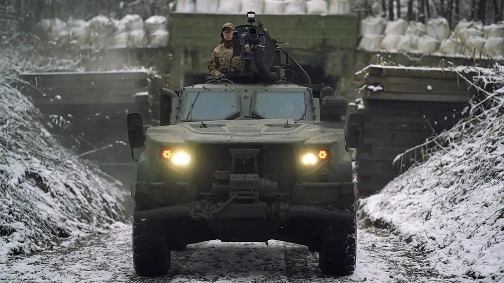
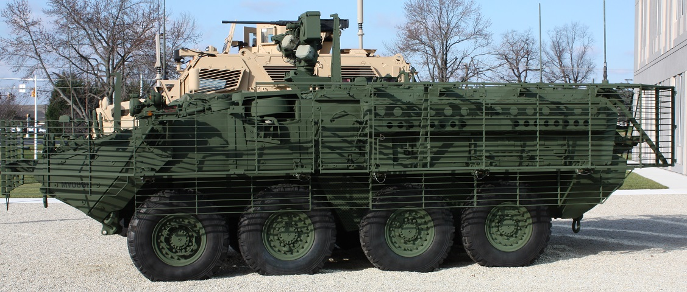
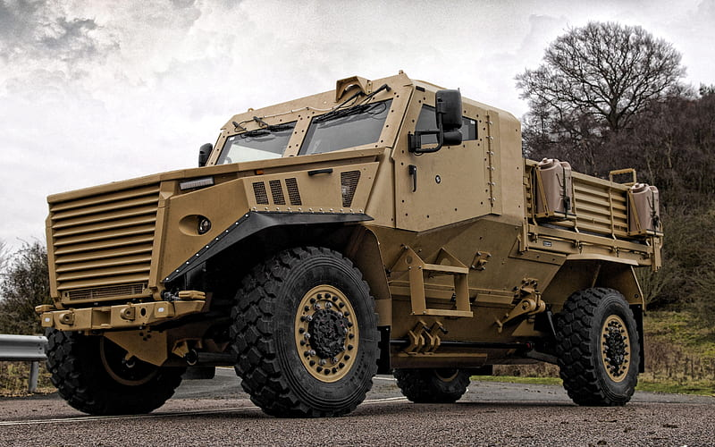
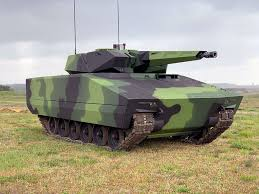

The Oshkosh Joint Light Tactical Vehicle (JLTV) is the US military's next-generation light tactical vehicle, engineered to provide an unprecedented balance of MRAP-level protection, off-road mobility 70% faster than previous vehicles, and a robust C4ISR (Command, Control, Communications, Computers, Intelligence, Surveillance, and Reconnaissance) technology backbone. Designed to partially replace the aging HMMWV fleet, the "go-anywhere, do-anything" Oshkosh JLTV excels in harsh battlefield environments.

The Stryker (M1126 ICV) is a versatile, 8-wheeled armored vehicle for the U.S. Army, offering protected transport for 2 crew and 9 infantry, acting as an armored personnel carrier (APC). Derived from the Canadian LAV III, it provides tactical mobility, can mount weapons like .50 cal M2s or Mk19 grenade launchers via a remote weapon station, features 14.5mm armor protection with RPG upgrades, and supports infantry with mobile firepower and C4ISR capabilities.

The RG-31 Nyala is a highly effective, multi-purpose Mine-Resistant Ambush Protected (MRAP) vehicle widely used by global forces, including the UN and US Army, for peacekeeping and combat missions in hazardous environments. Manufactured by BAE Systems Land Systems OMC and General Dynamics Land Systems, the RG-31 is renowned for its exceptional survivability against landmines and improvised explosive devices (IEDs).

Lynx KF41: Modular IFV for Full Spectrum of Operations ...The Rheinmetall Lynx KF41 is a highly mobile, modular, next-generation tracked armored fighting vehicle (AFV) designed for adaptability across various missions, featuring a powerful 1,140hp engine for speed (>70km/h), advanced digital architecture, and modular protection (ballistic/mine) that can be upgraded for different threats, all on a common chassis for roles like Infantry Fighting Vehicle (IFV), command, or medical support, with key features being its strong power-to-weight ratio, Lance turret (30/35mm cannon, anti-tank missiles), and scalability for future growth.